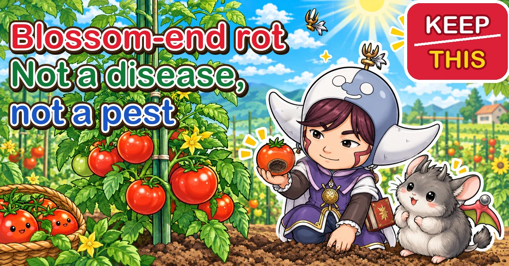
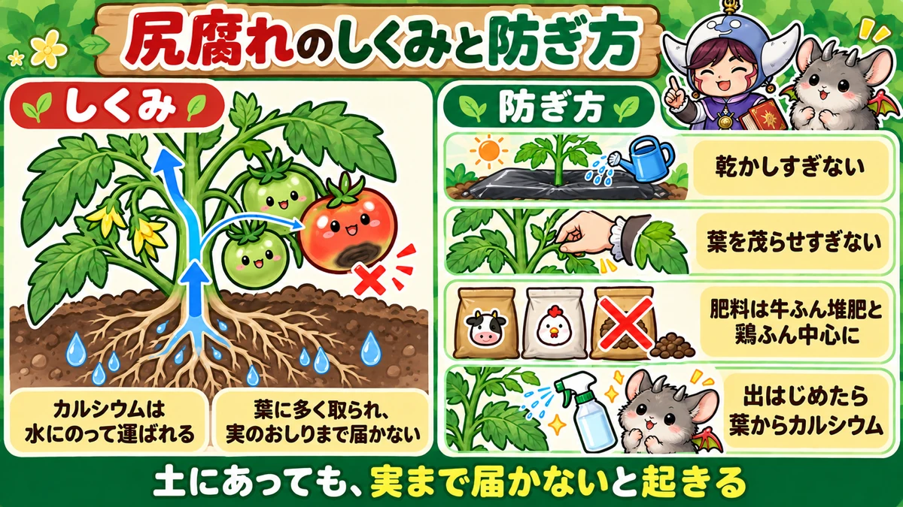
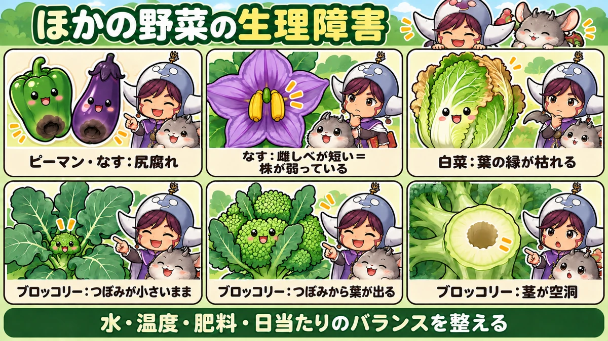

Tomato blossom-end rot 🍅 The complete guide to physiological disorders

🍅 "My big tomato was nearly ripe, but the bottom turned black and sunk in."
🍅 "The rain stopped and my red tomatoes split open overnight."
🍅 "There is a tiny hole, but I cannot find a caterpillar inside."
Hello, I'm Eiko. Eight years of growing vegetables organically and without pesticides, and a teaching licence in science.
These symptoms can be alarming, but they are often not a disease or an insect at all. They may be physiological disorders: the growing conditions have got out of balance. This article explains blossom-end rot first, then cracking, tiny holes and other disorders, with ways to tell them apart and prevent them next time.
Where you are: "Tomato" here includes large-fruited and cherry tomatoes; "blossom end" means the end opposite the stalk, where the flower was. The seasonal timing is for central Japan; shift it to your own first frosts and rainy season.
The essentials: blossom-end rot is not an infectious disease. Calcium is carried in the water stream from the roots, so drought, heat, too many leaves, or too much nitrogen or potassium can stop it reaching the fruit. Keep the soil evenly moist, avoid excessive foliage and feed, and test the soil before adding lime.
① Tomato fruit problems at a glance
Blossom-end rot
- Signs: the blossom end turns black or brown and sinks in; in severe cases it rots from there
- Main cause: not enough calcium reaches the fruit (dry soil, heat, too much foliage, or too much nitrogen or potassium)
- When it appears: after the rainy season, through summer, while the fruit is swelling
- Crops affected: especially large tomatoes, but also cherry tomatoes, aubergines, peppers and sweet peppers
Fruit cracking
- Signs: the skin splits in rays or in rings
- Main cause: rain or watering makes the fruit take up water suddenly; the inside expands faster than the skin. Strong sun can add to it
- When it appears: in the rainy season or after a summer shower
- Crops affected: tomatoes and cherry tomatoes
Tiny-hole fruit
- Signs: a very small, pin-prick hole with no droppings around it
- Main cause: thought to be a calcium-related physiological disorder
- How to tell: a hole a few millimetres wide with lots of droppings points to a caterpillar such as a tobacco budworm instead
Other disorders
- Hollow fruit: gaps form inside
- Grey wall: uneven colour or stripes appear on the skin
- Windowing or zippering: zipper-like scars or holes appear on the surface

What this diagram says （図解の文字）
- How to tell tomato physiological disorders apart
- "Blossom-end rot: the bottom goes black and sinks" ／ "Fruit cracking: it splits after rain"
- "Tiny hole, no droppings: physiological disorder" ／ "Large holes, droppings: insect"
- "Not a disease, so it does not spread to nearby plants"
② What is a physiological disorder?
Not a disease or an insect
A physiological disorder is a symptom caused by an awkward growing environment: temperature, water or nutrient balance, rather than a pathogen or insect. Blossom-end rot is sometimes called "blossom-end rot disease", but it is not a disease and cannot spread to neighbouring plants. Fungicides will not cure it.
Remove the cause and later fruit can be fine
A fruit that already has the disorder will not recover. Remove the cause, however, and fruit that develops afterwards may be clean. It is common for the upper trusses on the same plant to grow normally.
③ How blossom-end rot works
Calcium strengthens the plant
Calcium strengthens the walls around plant cells. It is a little like the material that makes bones strong in people. When calcium is short, cells become fragile and the fastest-growing part is damaged first. In a tomato fruit, that is the blossom end.
Calcium travels with water
Roots take up calcium dissolved in water, and the water stream carries it through the plant. Once calcium reaches a leaf, it is difficult for the plant to move it somewhere else. If the water stream weakens, calcium cannot reach a fruit that is growing fast at the end of a truss.
It can happen even when the soil contains calcium
If you normally add lime when preparing the soil, there is usually calcium in the ground. Blossom-end rot often means not that calcium is absent, but that it has not reached the fruit.
④ Conditions that make it likely
1. The soil is dry
When soil dries, roots cannot take up calcium because it must be dissolved in water. Blossom-end rot often appears when the rainy season ends and a run of hot, dry weather begins.
2. The temperature is high
On hot days, leaves lose more water. The water flow is pulled towards the leaves, leaving less for the fruit and making it harder for calcium to arrive there.
3. There are too many leaves
With a lot of foliage, much of the calcium taken up by the roots is carried to leaves instead of fruit. It is more likely when side shoots are left to grow or a two-stem plant becomes crowded.
4. Too much nitrogen or potassium fertiliser
Excess nitrogen or potassium can interfere with calcium uptake and also make the plant produce leaves rather than fruit. Heavy applications of high-nitrogen oil-cake fertiliser are a particular risk.
Soil preparation before and after planting matters
The symptom appears while fruit is growing, but the cause may start before planting. Repeatedly growing tomatoes in the same place without lime, adding a lot of high-nitrogen feed, and leaving a bed that dries quickly without mulch can combine to produce a sudden summer outbreak.
5. Repeating the same crop in the same place
Some gardeners find that repeatedly growing tomatoes, aubergines and their relatives in one place unbalances the soil and makes blossom-end rot more likely. Rotation is worth considering.
⑤ Preventing blossom-end rot
1. Do not let the soil dry too far
This is the most important step. Mulch holds moisture in the soil and reduces how often you need to water. When a run of sunny days has dried the soil well down, water generously in the morning. Lift the edge of the mulch and pour water underneath, or water the path between beds so it soaks sideways into the root zone.
2. Do not let the foliage become too dense
Pinch out side shoots regularly and remove old lower leaves. With fewer leaves, more of the calcium stream can reach the fruit. Some growers remove one leaf opposite, or just above, a fruit truss so water and calcium that would have gone to that leaf can reach the fruit instead.
3. Keep fertiliser balanced
Rather than using a lot of high-nitrogen oil-cake fertiliser, grow tomatoes mainly with cattle-manure compost and chicken manure. This reduces the risk of too much nitrogen. Chicken manure contains a good deal of calcium, so it suits fruiting crops such as tomatoes.
4. Add lime only after testing the soil
Dolomitic lime can reduce acidity and supply calcium. First test the soil: if it is already close to neutral, no lime is needed. Do not add lime and fertiliser at the same time; leave about two to three weeks after liming before adding compost or fertiliser.
5. Supply calcium through the leaves
When blossom-end rot first appears, some gardeners spray calcium onto the leaves for foliar uptake. Commercial calcium products for blossom-end rot are available. Other home methods use the clear liquid above lime that has been dissolved in water, or eggshell dissolved in vinegar and then diluted. Home-made strengths vary, so dilute generously and watch the leaves closely.

What this diagram says （図解の文字）
- How blossom-end rot works and how to prevent it
- "Calcium is carried with water" ／ "It is taken up by leaves, so it cannot reach the fruit end"
- "Don't let it dry out" ／ "Don't let leaves become too dense"
- "Use cattle-manure compost and chicken manure as your main fertilisers"
- "Once it starts, supply calcium through the leaves"
- "Even if calcium is in the soil, it happens when it does not reach the fruit"
⑥ Watering to prevent it
Check below the surface first
Before watering, dig about 5 cm down with a finger a little away from the stem. If it is dry all the way down, water. If only the surface is dry and the soil below is moist, wait.
Water in the morning
Water in the cool morning. Watering at midday in midsummer can warm the water against hot soil and stress the roots. Evening watering leaves the soil wet overnight and can encourage disease.
Get water to the whole root zone
With mulch, a little water poured into the planting hole may not reach the outer roots. Lift the mulch edge and run water underneath, or water the path between beds so it soaks in from the side.
Do not alternate bone-dry soil with a flood
Letting soil become completely dry and then adding a great deal of water makes fruit take up water suddenly, which can cause cracking, and makes calcium uptake erratic. Water before it dries completely and aim for an even moisture level.
Containers dry faster
Check the surface in the morning. In summer, water until it runs from the drainage holes when the pot is dry. In very hot weather, check again in the evening.
⑦ Reducing excess foliage
Pinch side shoots while small
Side shoots rapidly add leaves. Pinch them at about 5 cm while they are small, on a dry morning.
Remove lower leaves gradually
Take leaves below harvested trusses, yellowing old leaves and leaves touching the ground. Removing too many at once weakens the plant, so do a little at a time.
One leaf opposite the truss
For a large tomato at risk of blossom-end rot, cutting one leaf opposite the truss, or just above it, is a simple, no-cost method said to make water and calcium more available to the fruit.
⑧ Test the soil pH
Why test?
Lime reduces acidity and supplies calcium, but too much moves soil towards alkalinity and can upset nutrient uptake. Test before adding it.
How to test
Use a soil pH meter pushed into the ground, or a colour test in which soil is mixed with water. Take readings at several points where the bed will be made.
A rough guide
Tomatoes are said to prefer slightly acid to near-neutral soil. If the result is near neutral, leave the lime out. If it is strongly acid, use dolomitic lime according to the packet and wait two to three weeks before adding compost or fertiliser.
⑨ If blossom-end rot has appeared
Remove affected fruit early
Affected fruit will not recover and may rot from the damaged end. Pick it early to reduce the plant's burden. If the black area is small and not rotten, you can cut it away and eat the rest.
Find and correct the cause
Check whether the soil is dry, the foliage is crowded, or you recently fed heavily. Adjust watering, pinch side shoots and remove lower leaves, and review the fertiliser. If you need to act quickly, use a foliar calcium product cautiously.
Protect the upper trusses
When fruit on the lower truss has blossom-end rot, treat it as a warning to protect fruit above it. Correcting the cause often keeps the next trusses clean.
⑩ Fruit cracking
Why does it split?
After dry weather, rain or heavy watering makes a tomato take up water quickly. The inside swells faster than the skin can stretch. Ripe red fruit has softer skin and cracks more easily.
Strong sun can add to it
When strong summer sun hits fruit directly, the difference in temperature and moisture between the exposed surface and the inside can make cracking more likely. Leaving a few side shoots can provide a little shade.
Ways to reduce cracking
- Harvest ripe fruit early; pick coloured fruit before forecast rain
- Use a clear rain cover so rain does not hit the fruit directly
- Mulch to keep soil moisture steady
- Do not leave soil bone-dry and then apply a great deal of water at once
- Adequate calcium is also said to make the skin stronger and less prone to cracking
What about cracked fruit?
Cracked fruit is edible if it has not spoiled, but insects and pathogens can enter through the split and it will not keep. Eat it promptly or cook it.
Cherry tomatoes
Some cherry varieties crack more readily than large tomatoes. Instead of waiting to harvest a whole truss, pick ripe fruit one by one.
Watch for birds too
Red ripe fruit attracts crows and other birds. Early picking prevents bird damage as well as cracking.
⑪ Making a rain cover
Why cover?
Direct rain makes fruit crack and splashes soil onto leaves, which can encourage disease. A rain cover helps with both problems.
The basic structure
- Put tall stakes on both sides of the tomato plants
- Lay horizontal stakes across the tops to make a roof frame
- Cover the frame with clear polythene and fasten it firmly against wind
- Leave the sides open so air can pass through
Ready-made tomato rain-cover kits are sold for home gardens.
Keep the sides open
Closing the sides makes the space too hot and humid. A roof alone is better. Under a roof the soil dries more quickly, so check it often and water when necessary.
⑫ Tiny holes: disorder or insect?
The physiological hole
Sometimes a fruit has a very tiny, pin-prick hole with no droppings and no insect. This is thought to be a calcium-related physiological disorder, often linked with lack of water. If the soil is dry below the surface, water thoroughly.
An insect hole
A tobacco budworm or similar caterpillar makes a hole several millimetres wide and leaves plenty of droppings. Search inside the fruit and on nearby leaves.
The quick check
- Hole size: pin-prick suggests a physiological disorder; several millimetres suggests an insect
- Droppings: none suggests a disorder; lots suggests an insect
⑬ Other tomato physiological disorders
Hollow fruit
Gaps inside the fruit can result from uneven pollination, temperature or nutrient balance. It may still be edible if it has not spoiled.
Grey wall
The skin develops uneven colour or greyish stripes. It is a growing disorder rather than an infectious disease.
Windowing and zippering
Scars or openings that look like a zip can appear on the fruit surface. They are also physiological disorders.
Catfacing
Fruit with an irregular, deeply ridged shape is often called catfacing. It is ugly but usually edible when sound.
The basic response
Keep water, temperature, fertiliser and sunlight as even as you can. Remove fruit that is rotting, but do not assume every odd shape is a disease.
Can you eat it?
Oddly shaped fruit or fruit with a small dry disorder can be eaten after cutting away the affected part. Do not eat fruit that is actively rotting or smells wrong.
⑭ What the plant's shape tells you
Very thick stems and large leaves curling inward
This often means too much nitrogen or water. Stop adding feed and improve airflow rather than adding more.
Small top leaves and a thin stem
Small leaves at the top and a thin stem are a sign that fertiliser is running short, especially while the plant is carrying lots of fruit. Give a side dressing to keep the plant growing strongly.
Wilting at midday but recovering by evening
Heat and high water loss can make a plant wilt temporarily. Check below the surface; repeated severe wilting can reduce calcium delivery to fruit.
Sunscald on peppers and aubergines
Fruit or leaves on the sunny side can turn pale or brown while the shaded side remains sound. Avoid stripping all the foliage; a little shade helps.
⑮ What mulch does
It holds moisture
Mulch slows evaporation and reduces the swing between dry and soaked soil.
It stops soil splash
Rain and watering cannot splash muddy soil onto the leaves as easily, which helps reduce disease.
Lay it on a warm morning
Lay plastic mulch on a warm morning, when the film is stretched. It will tighten as it cools; if you lay it when cold, it will sag when it warms. Bury the edges firmly so wind cannot lift it and insects cannot enter through gaps.
⑯ Physiological disorders in aubergines, peppers and sweet peppers
Why cherry tomatoes are less affected
Small fruits generally need less calcium while they are swelling, so blossom-end rot is less frequent than in large tomatoes. It can still happen.
Blossom-end rot on aubergines and peppers
The bottom of the fruit can turn dark and sink in for the same water-and-calcium reasons. Keep moisture even and avoid overfeeding.
A sign that an aubergine is weak
If the central stigma is shorter than the surrounding yellow anthers, the aubergine may be exhausted by carrying too much fruit. Harvest fruit early to reduce the load, then review watering and top dressing. Small flowers and thin stems at the tips are further signs of weakening.

What this diagram says （図解の文字）
- Other vegetable physiological disorders
- "Peppers and aubergines: blossom-end rot" ／ "Aubergine: a short stigma means the plant is weak"
- "Chinese cabbage: leaf edges die" ／ "Broccoli: buds stay small"
- "Broccoli: leaves come out of the buds" ／ "Broccoli: hollow stem"
- "Balance water, temperature, fertiliser and sunlight"
⑰ Leafy crops and broccoli
Chinese cabbage and cabbage: dead leaf edges (tipburn)
The edges of inner leaves can turn brown when calcium does not reach fast-growing tissue. Keep the soil moist and do not overfeed. It is not an infectious disease.
Broccoli: buds stay small (buttoning)
Cold before the plant is big enough can trigger a head that stays small. Plant at the recommended time, help seedlings establish and keep them fed. Avoid old, overgrown seedlings that struggle to root.
Broccoli: uneven flower heads
High temperatures can disrupt head development, leaving a bumpy surface and uneven colour. Flavour changes little. Avoid planting too early or giving a large amount of fertiliser at once.
Broccoli: leaves emerge from the buds (leafy heads)
High temperatures as the head starts to form, or excessive nitrogen, can make small leaves grow through the buds.
Broccoli: hollow stem
Too much fertiliser or high temperatures can make the outside grow faster than the centre, leaving a hollow stem. Hollow stems spoil more easily, so use them promptly.
Broccoli: some buds yellow and die (brown beads)
Heat and drought stress are thought to make some buds yellow or brown and die. Harvest early once this starts.
⑱ What to check on a garden round
Follow this order about twice a week to catch the first signs.
- Fruit bottoms: look for a black spot or a dent while fruit is still small
- Fruit surface: check for cracks, pin-prick holes and holes with droppings
- Soil at the stem: dig with a finger and see whether it is dry below the surface
- Foliage: check for long side shoots and crowded lower leaves
- Growing tip: note small leaves or a thinning stem
- Forecast: harvest coloured fruit before predicted rain
⑲ What to do through the season (central Japan)
- February–April: test the soil where tomatoes will go; if needed, add dolomitic lime, wait two to three weeks, then prepare with cattle-manure compost and chicken manure. Lay mulch
- May–June: pinch side shoots regularly; use rain cover in the rainy season; harvest coloured fruit before rain
- July–August: watch for dryness after the rainy season; water in the morning when the soil is dry below; remove lower leaves; investigate blossom-end rot
- September–October: plant autumn broccoli and Chinese cabbage on time; never apply a large amount of feed at once
⑳ Where advice differs
Will extra calcium fertiliser cure it?
Not necessarily. If soil already contains calcium, the real problem may be water flow, heat, crowded foliage or excess fertiliser. Correct the growing conditions first.
Does a vinegar mixture help?
Diluted eggshell-and-vinegar liquid or other home-made mixtures are sometimes recommended, but their strength is variable. If used, dilute generously and watch for leaf damage; do not treat it as a guaranteed cure.
Should I restrict water to make sweeter tomatoes?
Letting plants wilt hard makes calcium delivery unstable and can cause cracking. Keep moisture reasonably even rather than deliberately starving the plant.
㉑ Common mistakes
Spraying fungicide because blossom-end rot looks like disease
It is not a pathogen, so fungicide does not help.
Flooding bone-dry soil
Sudden heavy watering can crack fruit and make calcium uptake swing.
Adding lots of oil-cake fertiliser
Too much nitrogen makes lush foliage and can obstruct calcium uptake.
Adding lime generously every year
Test pH first. Unneeded lime can push the soil alkaline and disturb nutrient balance.
Letting a two-stem plant become a jungle
Excess foliage sends more of the water stream to leaves and reduces airflow.
Watering over the leaves at midday
Water the soil in the morning instead.
Leaving affected fruit on the plant
Pick fruit with blossom-end rot early.
Leaving red fruit until after rain
Harvest coloured fruit before rain to reduce cracking and bird damage.
㉒ Questions
Can I eat a fruit with blossom-end rot?
If it is not rotten, cut away the black area and use the sound part promptly. Do not eat fruit that has spread with rot.
How can I tell it from a diseased fruit?
Blossom-end rot is a dry, dark, sunken area at the blossom end and does not spread from plant to plant. A disease often has other spreading symptoms. When unsure, remove the affected fruit and observe the next one.
Can cherry tomatoes get it?
Yes, although it is less common than in large tomatoes.
My container tomato has it
Containers dry much faster. Check below the surface each morning, water thoroughly when dry, and avoid large dry-to-wet swings.
Is a plant that had it finished?
No. Correct the cause and upper trusses may be fine.
Can I mix eggshell straight into the soil?
Crushed eggshell works slowly and does not solve an immediate water-flow problem. Use tested soil preparation and steady watering instead.
It happens in the same bed every year
Check pH, rotation, mulch, watering and excess nitrogen. Do not automatically add more lime.
How should I use foliar calcium?
Use a product at its stated dilution, spray lightly and watch the leaves. Home-made liquids vary, so be especially cautious.
Will one affected plant infect the others?
No. Blossom-end rot is not contagious, although the same dry or overfed conditions can affect several plants.
🔬 The science: calcium and water flow
Why calcium struggles to reach fruit Calcium moves mainly in the water stream pulled through the plant by transpiring leaves. A dry root zone reduces uptake; heat and a large leaf area pull more water towards leaves. The rapidly swelling fruit can then receive too little calcium even when the soil contains it.
Why the blossom end goes black first The blossom end is the end furthest from the stem's main supply route and is also fast-growing tissue. When cells cannot build strong walls, that area becomes damaged first.
Magnesium matters too Magnesium is part of chlorophyll and is needed for healthy leaves. It is different from calcium, so adding more of one does not automatically fix an imbalance of the other.
Why rain causes cracks A fruit that has expanded slowly in dry weather can suddenly fill with water. Internal pressure rises faster than the skin can expand, especially once the skin has softened with ripening.
Why excess fertiliser can block calcium High levels of nitrogen or potassium change root uptake and push soft leafy growth. The plant then has more leaves competing for the water stream and fruit receives less calcium.
To sum up
- ✅ Blossom-end rot is a physiological disorder: calcium does not reach the fruit; fungicide does not help
- ✅ Dryness, heat, excessive foliage, and too much nitrogen or potassium are common causes
- ✅ Keep moisture even with mulch and morning watering; pinch side shoots and remove lower leaves
- ✅ Use cattle-manure compost and chicken manure sensibly; test pH before liming, and leave two to three weeks between lime and fertiliser
- ✅ If it starts, remove affected fruit and use foliar calcium cautiously
- ✅ Cracking follows sudden water uptake; harvest coloured fruit before rain and use a roof-only rain cover
- ✅ A pin-prick without droppings suggests a physiological disorder; a hole several millimetres wide with droppings suggests an insect
- ✅ Hollow fruit, grey wall, windowing, catfacing and broccoli disorders are also growing-condition problems; sound parts can be edible
Thank you for reading all the way to the end! When a tomato looks wrong, check the soil, the water and the balance of the plant before reaching for a spray 🍅
Thank you for reading!